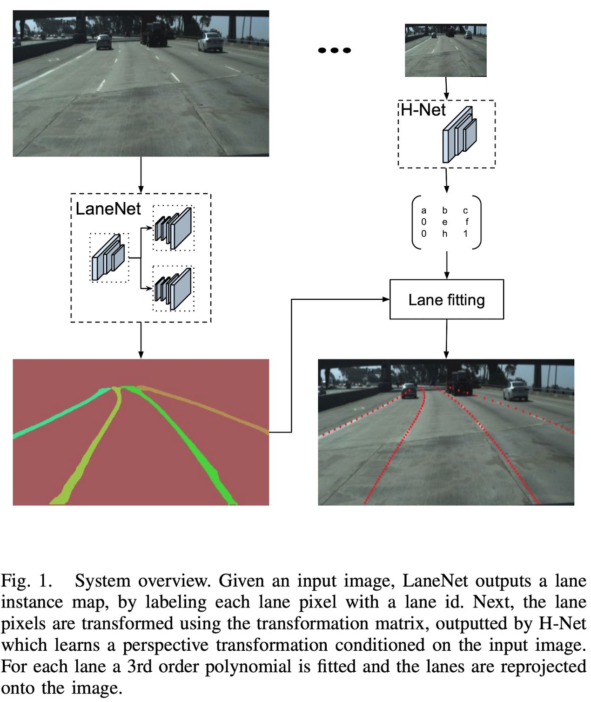
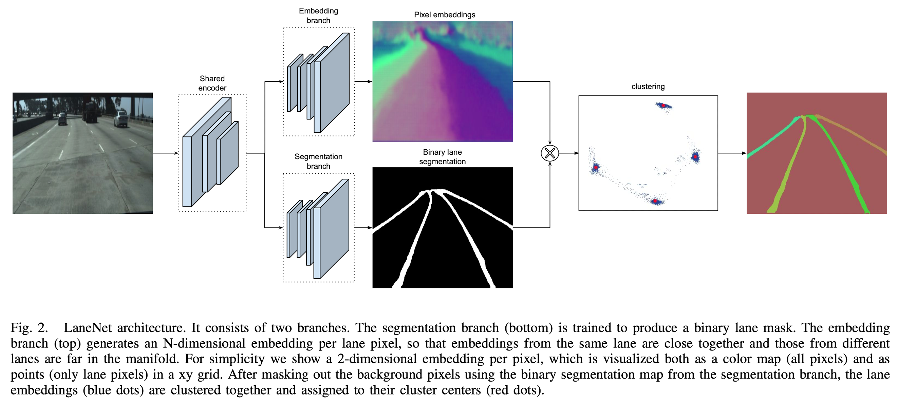
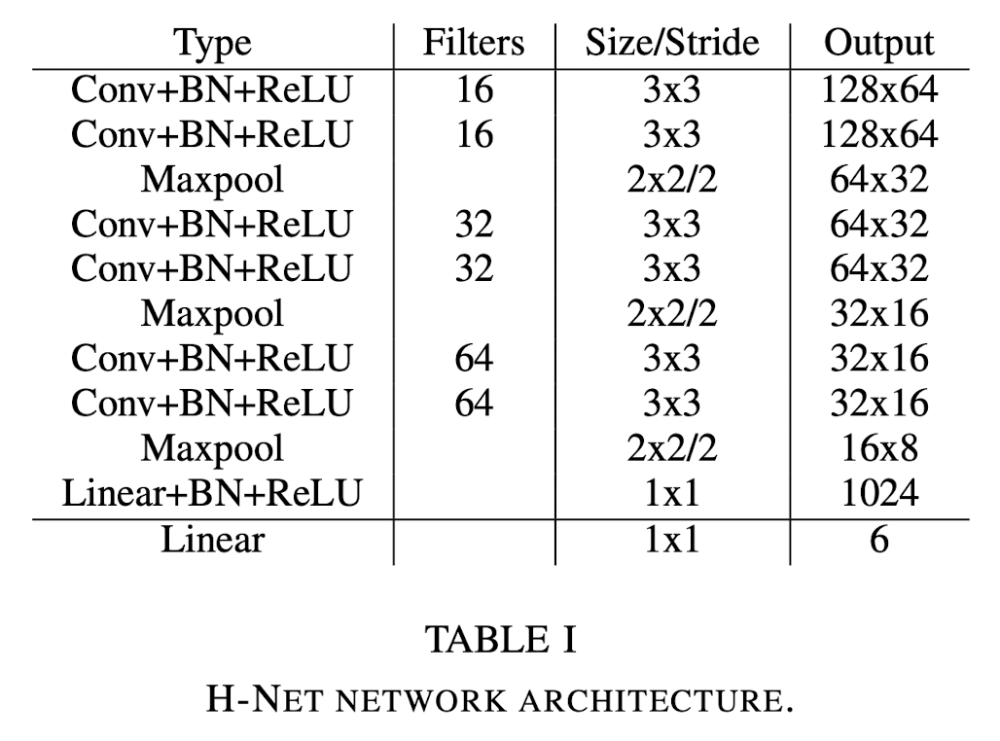

Towards End-to-End Lane Detection: an Instance Segmentation Approach
Motivation
Traditional Lane Detection
Traditional lane detection methods rely on a combination of highly-specialized, hand-crafted features and heuristics, usually followed by post-processing techniques.
- Computationally expensive
- Prone to scalability due to road scene variations.
Deep Learning Models
More recent approaches leverage deep learning models, trained for pixel-wise lane segmentation, even when no markings are present in the image due to their big receptive field.
- Limited to detecting a pre-defined, fixed number of lanes, e.g. ego-lanes, and can not cope with lane changes.
- At a final stage, the generated binary lane segmentations still need to be disentangled into the different lane instances.
Proposed Approach
- This paper propose to cast the lane detection problem as an instance segmentation problem — in which each lane forms its own instance — that can be trained end-to-end.
- To parametrize the segmented lane instances before fitting the lane, they further propose to apply a learned perspective transformation, conditioned on the image, in contrast to a fixed “bird-eye-view” transformation. By doing so, a lane fitting is robust against road plane changes, unlike existing approaches that rely on a fixed, predefined transformation.

LaneNet
Inspired by the success of dense prediction networks in semantic segmentation and instance segmentation tasks, they design a branched, multi-task network for lane instance segmentation, consisting of
- a lane segmentation branch
- and a lance embedding branch
that can be trained end-to-end.

The lane segmentation branch has two output classes, background or lane, while the lane embedding branch further disentangles the segmented lane pixels into different lane instances.
H-Net
To this end, curve fitting algorithms have been widely used in the literature. Popular models are
- cubic polynomials
- splines
- clothoids
To increase the quality of the fit while retaining computational efficiency, it is common to convert the image into a “bird-eye view” using a perspective transformation and perform the curve fitting there.
In particular, the neural network takes as input the image and is optimized with a loss function that is tailored to the lane fitting problem.
Method
LaneNet
The instance segmentation task consists of two parts, a segmentation and a clustering part. To increase performance, both in terms of speed and accuracy, these two parts are jointly trained in a multi-task network.
Binary Segmentation
To construct the ground-truth segmentation map, we connect all ground-truth lane points together, forming a connected line per lane.
- Note that they draw these ground-truth lanes even through objects like occluding cars, or also in the absence of explicit visual lane segments, like dashed or faded lanes.
- This way, the network will learn to predict lane location even when they are occluded or in adverse circumstances.
- The segmentation network is trained with the standard cross-entropy loss function. Since the two classes (land/background) are highly unbalanced, they apply bounded inverse class weighting.
Instance Segmentation
Therefore they use a one-shot method based on distance metric learning, which can easily be integrated with standard feed-forward networks and which is specifically designed for real-time applications.
By using the clustering loss function, the instance embedding branch is trained to output an embedding for each lane pixel so that the distance between pixel embeddings belonging to the same lane is small, whereas the distance between pixel embeddings belonging to different lanes is maximized.
Clustering
The clustering is done by an iterative procedure.
- By setting \(\delta_d > 6\delta_v\) in the above loss, one can take a random lane embedding and threshold around it with a radius of \(2 \delta_v\) to select all embeddings belong to the same lane.
- This is repeated until all lane embeddings are assigned to a lane.
- To avoid selecting an outlier to threshold around, we first use mean shift to shift closer to the cluster center and then do the thresholding.
Network Architecture
While the original ENet’s encoder consists of three stages, LaneNet only shares the first two stages between the two branches, leaving stage 3 of the ENet encoder and the full ENet decoder as the backbone of each separate branch.
The last layer of the segmentation branch outputs a one channel image, whereas the last layer of the embedding branch outputs a N-channel image, with N the embedding dimension.
Curve Fitting Using H-Net
A frequently used solution to this problem is to project the image into a “bird-eye view” representation, in which lanes are parallel to each other and as such, curved lanes can be fitted with a 2nd or 3rd order polynomial.
Loss Function
Since the lane fitting is done by using the closed-form solution of the least squares algorithm, the loss is differentiable. We use automatic differentiation to calculate the gradients.
Network Architecture
The network architecture of H-Net is kept intentionally small and is constructed out of consecutive blocks of 3x3 convolutions, BNs and ReLUs.

Results
Dataset
TuSimple lane dataset